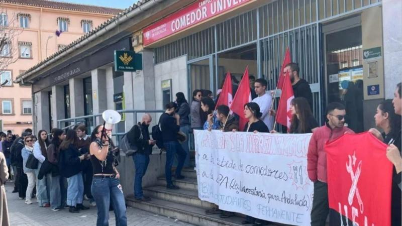
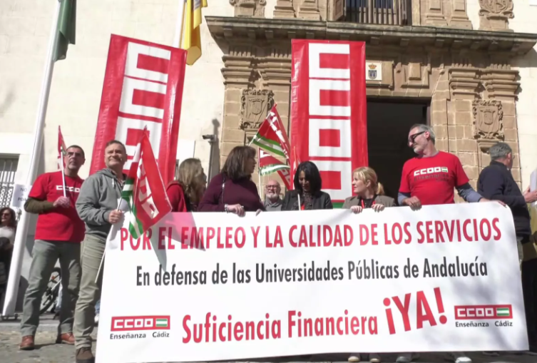

Actividades y Movilizaciones

Protestas estudiantiles en Granada contra la nueva ley universitaria andaluza
UGR - 12 de marzo de 2026
Protestas estudiantiles en Granada contra la nueva ley universitaria andaluza de Moreno Bonilla.
Leer en El Plural
La coordinadora 'UMA x la Pública' se moviliza por "una financiación digna"
UMA - 23 de septiembre de 2025
La coordinadora UMA x la Pública se moviliza por una financiación digna para la universidad pública.
Leer en Diario Sur
Protestas en defensa de la educación pública
UPO - 16 de septiembre de 2025
Protestas en defensa de la educación pública y banderas palestinas en la apertura del curso universitario andaluz.
Leer en Eldiario.es
Nueva protesta contra los recortes económicos en la UMA
UMA - 16 de mayo de 2025
Nueva protesta contra los recortes económicos en la Universidad de Málaga.
Leer en Diario Sur
Los docentes de la Universidad de Málaga claman contra los recortes
UMA - 25 de abril de 2025
Los docentes claman contra los recortes en pleno desembarco de universidades privadas.
Leer en Eldiario.es
La plantilla de la UCA se moviliza en demanda de financiación del sistema público universitario
UCA - 20 de febrero de 2025
La plantilla de la UCA se moviliza en demanda de financiación del sistema público universitario.
Leer en Onda Cádiz
Más de 500 personas participan en la concentración en defensa de la Universidad de Jaén
UJA - 7 de abril de 2022
Más de 500 personas participan en la concentración en defensa de la Universidad de Jaén.
Leer en Europa Press